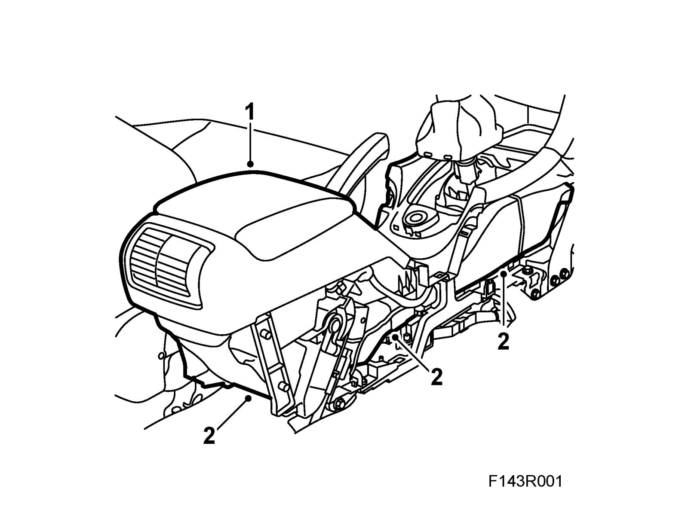
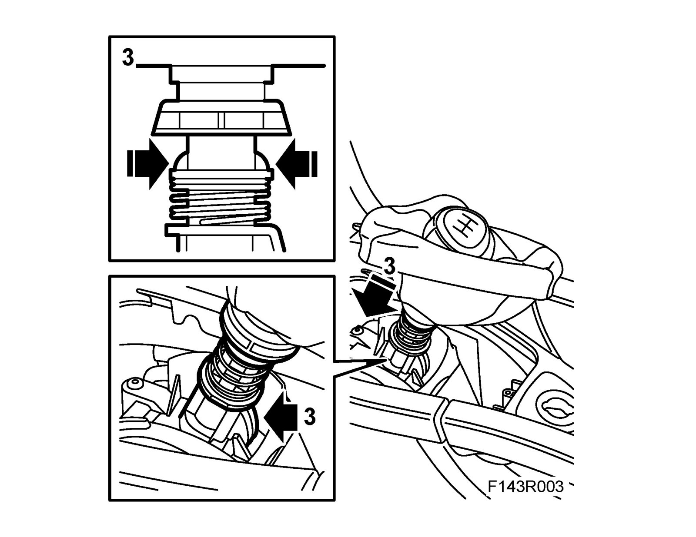
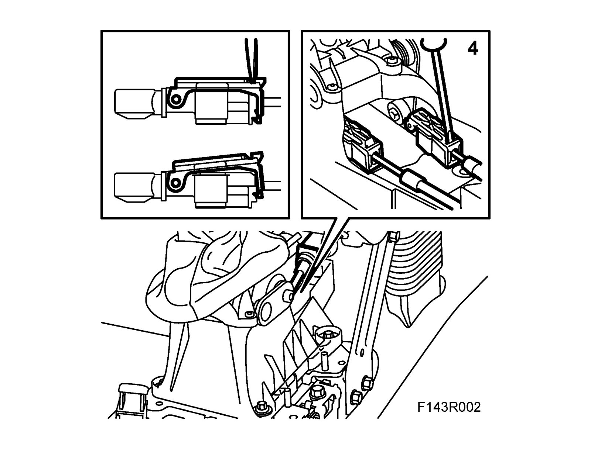
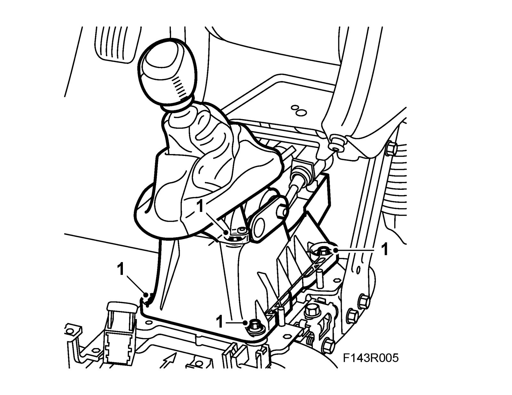
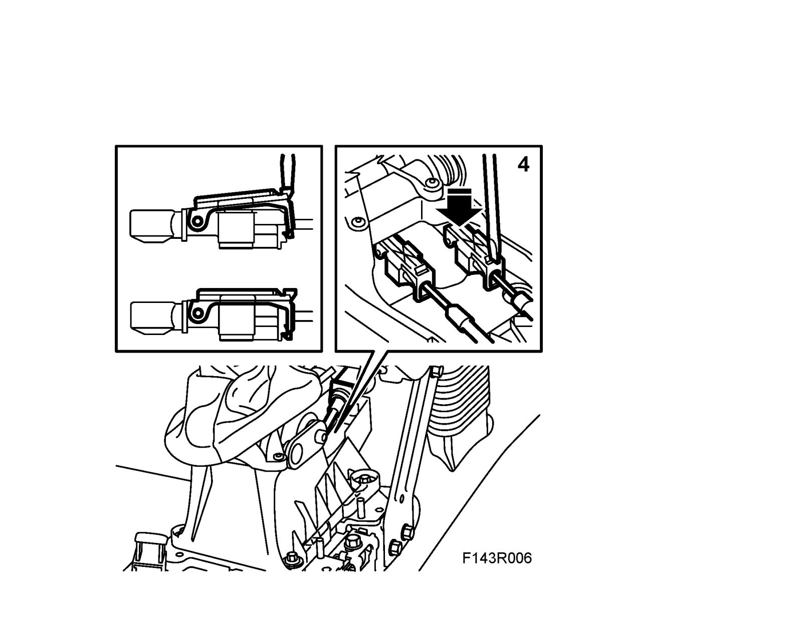

Gear Lever Housing
Gear lever housingTo remove
1. Remove the Floor console.

2. Remove the air duct.
3. Secure the gear lever in adjustment position by lifting the adjusting sleeve while pressing in the two catches. Use a pair of pliers. Let the catch engage in the adjusting position (position 4).

4. Carefully press a screwdriver blade onto the cable adjuster and pry slightly towards the gear lever. An audible click means that the adjustment catch has been released. Repeat the procedure on the other side of the cable adjuster.

5. Detach the gear cable sheath from the gear lever housing.
6. Remove the gear lever housing.
To fit
1. Fit the gear lever housing. Attach the cable sheaths to the gear lever housing and the cables to the cable retainers at the same time. The white cable sheath must be attached on the left-hand side and the black one on the right.
Tightening torque 10 Nm (7 lbf ft)

2. Check that the gear lever is in its adjusting position as for removal.
3. Check also that 4th gear is engaged in the gearbox.
4. Press on the gear adjusters with a screwdriver.

5. Lift up the adjusting device and fasten the catches to the gear lever.
6. Check the shifting positions.
7. Fit the air duct.
8. Fit the Floor console.